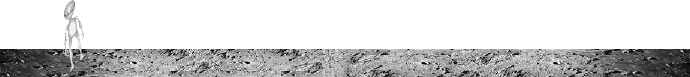

Esta página ofrece un sencillo juego de habilidad en el que una nave espacial intenta aterrizar sobre la superficie lunar,
sin estrellarse. Para ello, ha de mantener la velocidad por debajo de 5 m/s...¿Cómo?
El juego se inicia nada más cargar la página principal 'index.html'.
La nave comienza su descenso, acelerando por la atracción gravitatoria de la luna, como muestra el panel de la izquierda de la pantalla. Además de la Velocidad, nos da información del combustible que queda en los depositos de la nave y de la altura sobre la superfície.
Para frenar la nave en su descenso, pulsamos, y mantenemos pulsada, cualquier tecla, lo que encendera los motores y ralentizara la velocidad de descenso. Al soltar la tecla, vuelve a acelerar.
El objetivo del juego consiste en alunizar con una velocidad MÁXIMA de 5 m/s antes de quedarnos sin combustible, usando el método citado anteriormente.
De conseguir el objetivo, será felicitado. De lo contrario, la nave EXPLOTÁRA.
Para reanudar el juego, basta pulsar sobre el enlace, arriba, en el menú, Inicio juego. ¡¡BUENA SUERTE!!
HIDE MENU

